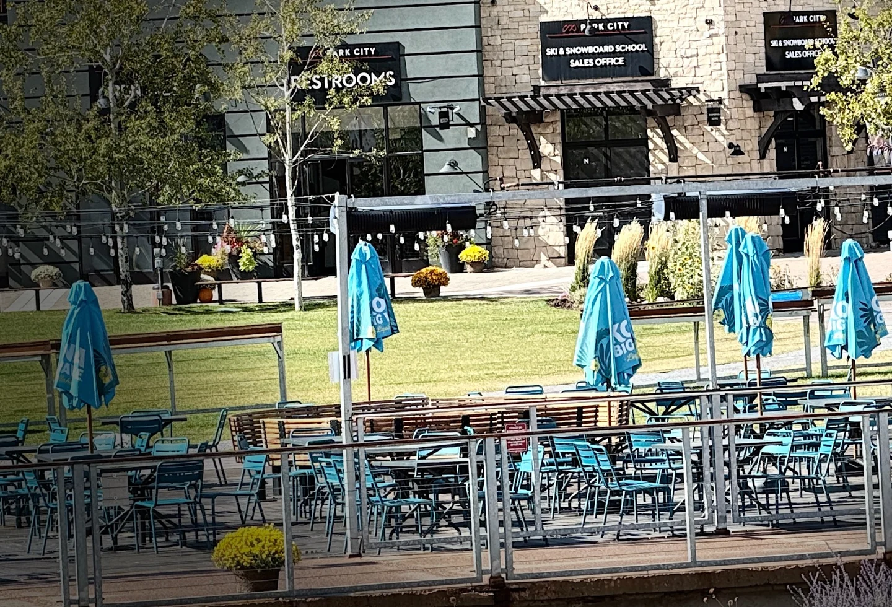

A trail map tells you where the lifts are. It does not tell you which one to get on at nine in the morning with a nervous eight-year-old, a confident teenager and someone who wants to ski Saddleback all day. This is the Canyons Village lift map rearranged around that problem.

Canyons Village is one of two bases at Park City Mountain, and the lift list for this side alone runs past a dozen names, several of which sound alike. Rather than catalogue them, this guide answers five questions in order. For the raw scale of the place, see Park City Mountain Resort by the numbers.
First, the lift that is not a lift
Start here: it is the commonest mistake at this base. The Canyons Village Skyway is new for 2026-27 and replaced the open-air Cabriolet. It is enclosed, free to ride, and not a ski lift: it runs between the parking structure and the village base, underneath the skiing. The resort lists it running 7:00 am to 6:00 pm, wider than the lifts.
If you are staying in the village you will barely touch it. If you drive in, it is the best part of your morning.
Which lift takes you up from the village?
Two lifts leave the village plaza for the mountain, and a third leaves Pendry Plaza a short walk away.
The Red Pine Gondola is the default and the one to learn first. Eight-person enclosed cabins, delivered to Red Pine Lodge mid-mountain. It was called Flight of the Canyons for years, so older guides still use that name. Eight per cabin means a family of eight rides together, which matters on a cold morning.
The Orange Bubble Express sits beside it: a four-seat chair with a clear hood that pulls down over you and heated seats underneath, still a small luxury in late February. Being a chair, skis stay on your feet.
The Sunrise Gondola runs from Pendry Plaza up to the Red Pine area as well. It opened for 2025-26, so it is no longer new. Its use is spreading the morning crowd: when the Red Pine queue is long, Sunrise often is not.
| Lift | Type | Leaves from | Use it for |
|---|---|---|---|
| Canyons Village Skyway | Gondola, free, 7am–6pm | Parking structure | Getting to the village. Not skiing. |
| Red Pine Gondola | 8-person gondola | Village plaza | Your default first lift of the day |
| Orange Bubble Express | 4-seat hooded chair | Village plaza | Same hill, skis on, warmer ride |
| Sunrise Gondola | 10-person gondola | Pendry Plaza | Dodging the Red Pine morning queue |
| High Meadow | Chair | Mid-mountain | Green runs and nervous skiers |
| Tombstone Express | 6-person chair | Mid-mountain | Long blues, strong intermediates |
| Saddleback Express | 4-person chair | Mid-mountain | Black and double-black terrain |
| Iron Mountain Express | 4-person chair | Far side of Canyons | Heading towards the Park City side |
| Quicksilver Gondola | 8-person gondola | Between the two bases | Crossing the mountain, and coming home |
Lift names change between seasons, so check the resort map before you ski. Two Park City side upgrades target 2027-28, not this winter.
Which lift should a beginner take?
This needs an honest answer rather than a marketing one. The beginner terrain here is mostly up the mountain, not at the base. The chair you want is High Meadow, which serves the green runs on that shoulder, with The Meadows and Meadow Way roughly alongside the lift. Wide, gentle, and a better view than any bunny slope deserves. A learning area near the base serves true first-timers.
The caveat: Canyons is not blessed with green runs. Once a developing skier has done The Meadows a few times, the next step is blue, with little in between. Families wanting days of pure green progression often find the Park City side more forgiving, which is better known before you book.
If anyone is in lessons, the school meeting points shape the whole morning. We covered that in Park City with kids and ski school.

How does a mixed-ability group stay together?
Eight people rarely ski at one speed. The trick is not keeping everyone on one run, but picking a lift everyone can get back to.
Red Pine Lodge is that place. Everything on this side funnels towards it, so you can split at the top of the Red Pine Gondola and still meet for lunch without anyone navigating. From that one point the group fans out: beginners and sore knees to High Meadow, intermediates to Tombstone Express for the long blues, and whoever came here to be frightened to Saddleback Express for the blacks. Nobody skis terrain they are not enjoying.
Agree a lift, not a landmark. The bottom of Tombstone at one o'clock works, because a lift is a fixed object everyone can find on a map. The blue run near that tree does not. Set it before anyone puts a phone away; signal on the hill is patchy.
Where this guide is written from
We own a Premier Two-Bedroom Villa inside Westgate Park City Resort, in Canyons Village. It is 1,100 square feet, two king bedrooms and two queen sleeper sofas, so it sleeps eight in one unit. Full kitchen, a kitchenette in the lock-off studio, two bathrooms with walk-in showers, and a short walk to the Red Pine Gondola.
It is available for Presidents' Week 2027, 13 to 20 February, and for spring break, 21 to 28 March 2027. We rent it ourselves rather than through an agency.
Which lift gets you back to the village at four?
Lifts run 9:00 am to 4:00 pm, weather permitting, across a season scheduled from 20 November 2026 to 19 April 2027. How you get home depends on which side you finished on.
If you stayed on the Canyons side, no answer is needed. You ski down to the village and walk to your door. That is the quiet luxury of basing yourself here, and the thing we go on about in what ski-in ski-out actually means in Park City.
If you crossed to the Park City side, the Quicksilver Gondola is your way home: eight-person cabins linking the two halves of the resort, a ride of roughly eight to ten minutes before any queue. Dreamcatcher or Tombstone Express gets you towards it; from Iron Mountain Express, drop down Chrome Alley to its base.
The crossing is not a five-minute hop. Treat two o'clock as your turnaround, not half past three. The photographs on our homepage are all from this side, and the reason we rarely cross mid-week is exactly this: the return eats an hour you would rather spend skiing. Miss the last Quicksilver and you face a bus or taxi around the mountain in ski boots. If you are still choosing a base, Canyons Village or the Park City base sets the two side by side.
Common questions
Which lift do I take first from Canyons Village?
The Red Pine Gondola, in almost every case. It leaves the village plaza, it is enclosed, and it carries eight people so a family boards together. It drops you at Red Pine Lodge, mid-mountain, where you can send different abilities in different directions.
Is the Canyons Village Skyway a ski lift?
No. The Skyway runs between the parking structure and the village base, below the skiing, and it is free. The lifts that actually take you up the mountain are the Red Pine Gondola and the Orange Bubble Express, both leaving from the village itself.
Where is the beginner terrain at Canyons Village?
Mostly up the mountain rather than at the base. The High Meadow chair serves the green runs on that shoulder, with The Meadows and Meadow Way alongside the lift line. There is a learning area near the base for anyone not ready for a chair.
What time do the lifts start turning at Park City Mountain?
Park City Mountain lists daily lift operations as 9:00 am to 4:00 pm for the 2026-27 season, scheduled from 20 November 2026 to 19 April 2027. Those hours are weather dependent, and individual lifts open on their own schedule within them.
Can I ski from Canyons Village to the Park City side and back in a day?
Yes, on skis the whole way, using the Quicksilver Gondola between the two sides. Give it more time than you expect: the ride alone is roughly eight to ten minutes before any queue, plus the runs at either end. Turn back by early afternoon.
Which lift gets me back to Canyons Village at the end of the day?
If you are on the Canyons side, you ski to the village and ride nothing. If you are over on the Park City side, the Quicksilver Gondola is the way home, and you want it well before the lifts stop at 4:00 pm.